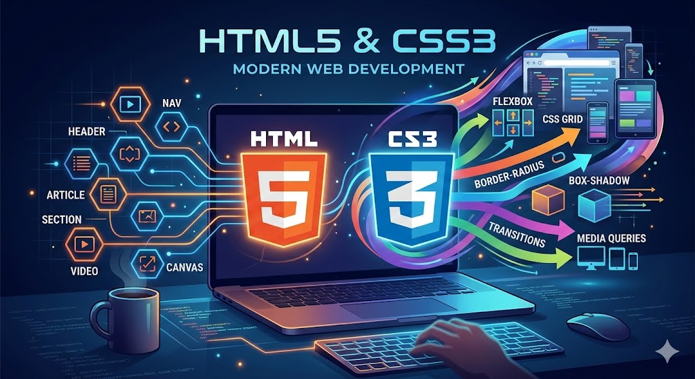
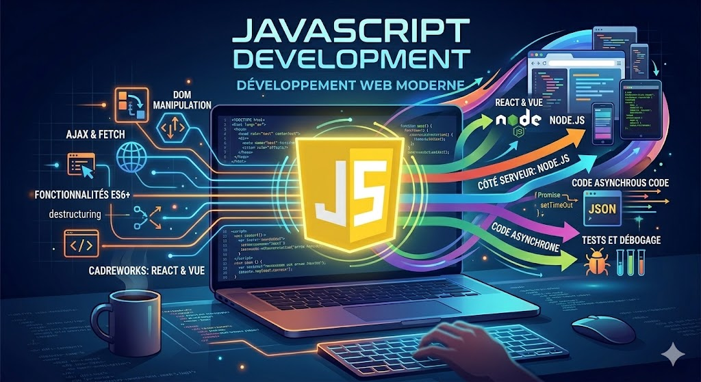
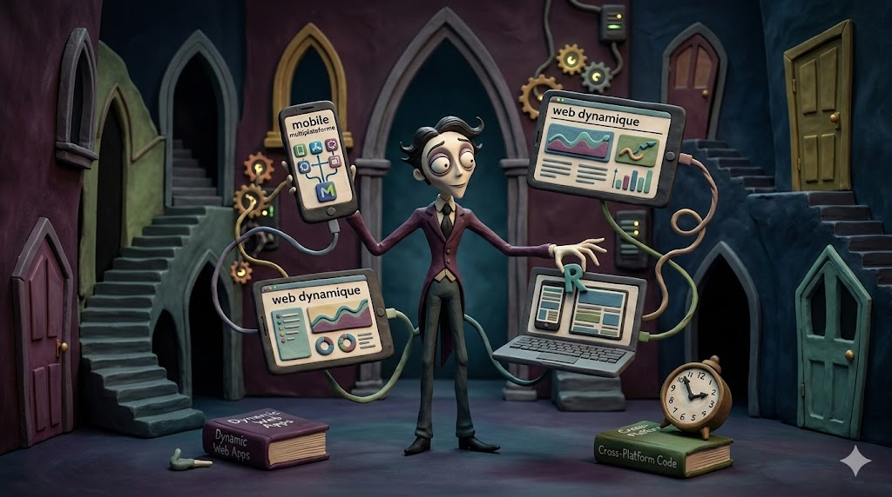
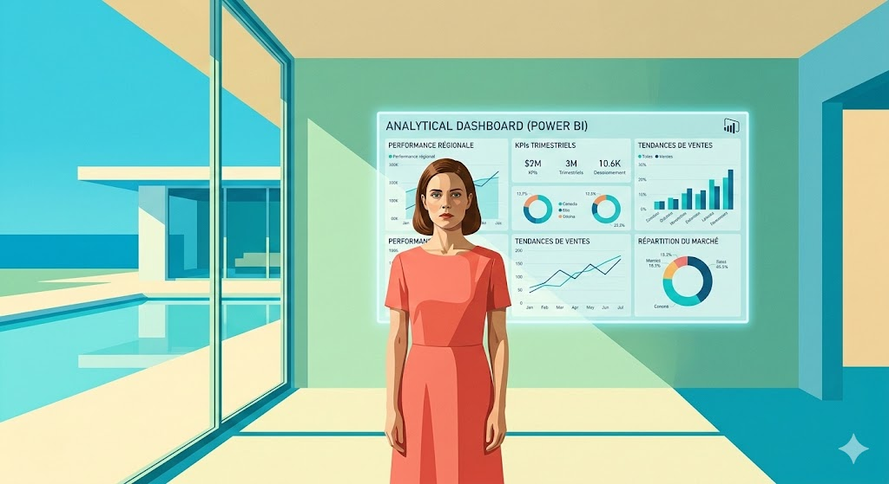
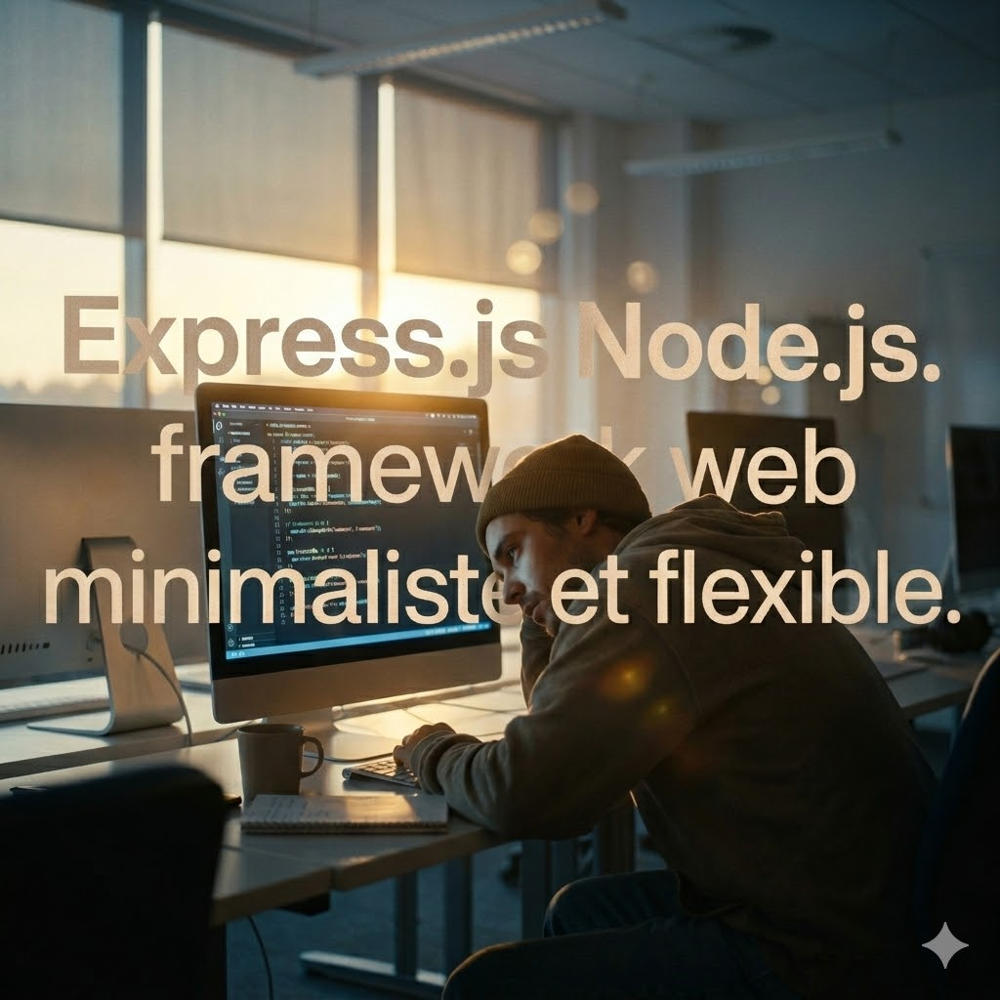
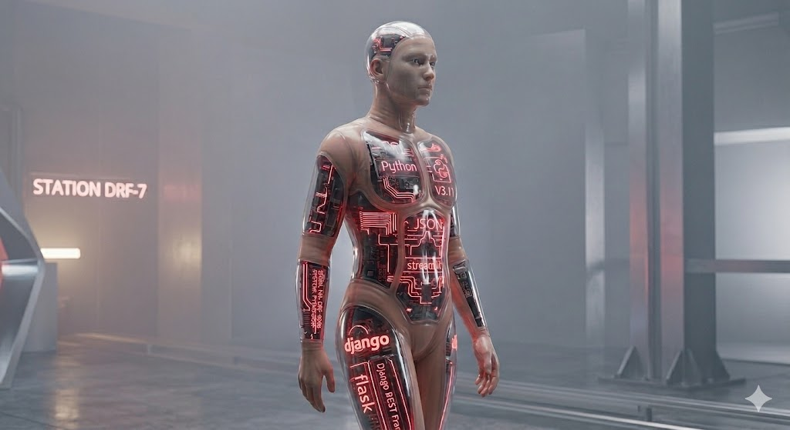
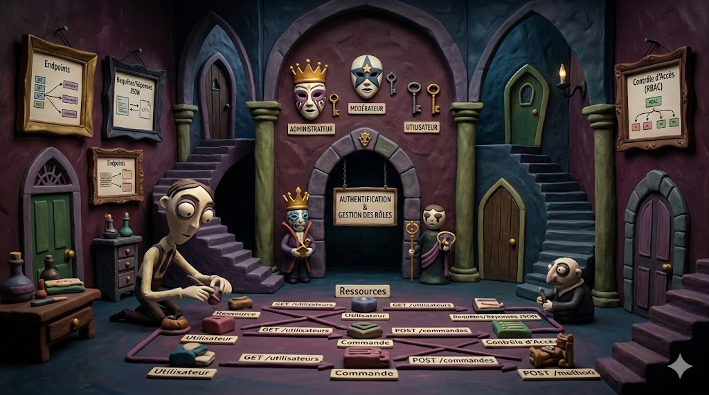
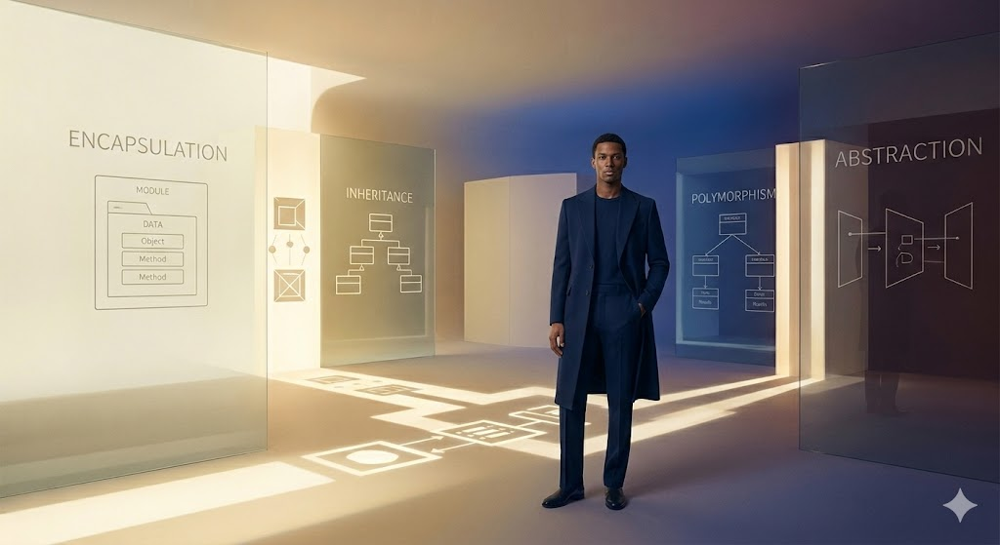
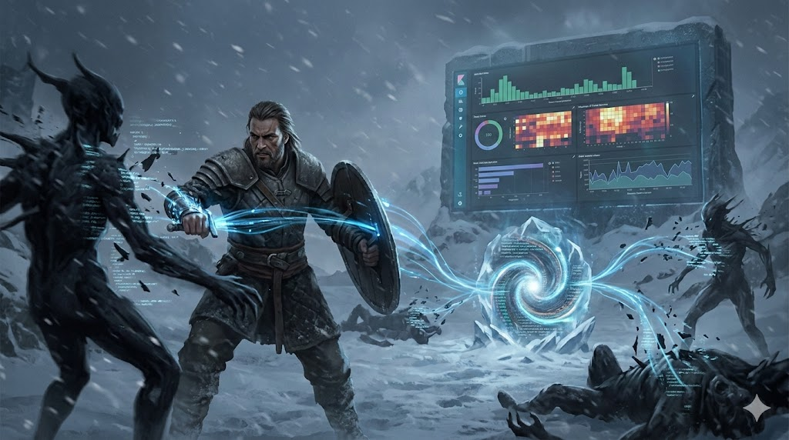

Comprendre les usages
Clarifier le besoin, structurer les parcours et concevoir des interfaces accessibles sur ordinateur comme sur mobile.
Je suis Bodian Arphan Kaback Junior, développeur fullstack et titulaire d’un Master en Génie Informatique, option Sécurité des Systèmes d’Information. Je transforme des besoins métier en applications utiles, soignées et pensées pour protéger les données.
Un équilibre entre expérience utilisateur, architecture applicative et sécurité, de la conception à la mise en production.
Clarifier le besoin, structurer les parcours et concevoir des interfaces accessibles sur ordinateur comme sur mobile.
Créer des expériences frontend et des services backend robustes, reliés à des API et bases de données adaptées.
Intégrer les contrôles d’accès, la journalisation et les bonnes pratiques de sécurité tout au long du développement.
Option : Sécurité des Systèmes d’Information
Département Génie Informatique
Des projets conçus et développés en équipe, au service de besoins concrets.
Explorez les plateformes en ligne.
Plateforme de valorisation des données ouvertes du Sénégal : tableaux de bord, carte interactive, croisement de jeux de données et assistant IA.
Participation au développement des écrans de consultation, à l’intégration des indicateurs et à la liaison des vues avec les modules de catalogue, de tableaux de bord et de cartographie.
Application web de gestion financière pensée pour simplifier le quotidien des commerçants, avec un parcours d’accès dédié et une interface de suivi.
Participation au parcours d’accès commerçant et aux interfaces de suivi financier, avec intégration des données de gestion entre l’interface et les services de l’application.
Plateforme de réservation de courses privées et partagées, avec suivi du chauffeur en direct, chauffeurs vérifiés et paiement flexible.
Participation aux interfaces de réservation et aux parcours chauffeur/passager, ainsi qu’à l’intégration du suivi de course et des informations de trajet.










Pratique réalisée dans des laboratoires, des CTF et des périmètres explicitement autorisés. Les tests sont limités au cadre défini, sans collecte de données réelles ni impact sur des systèmes tiers.
Pratique : exercices CTF et PortSwigger Web Security Academy; analyse de captures réseau avec Wireshark; simulations pédagogiques d’ingénierie sociale avec Storm-Breaker, en laboratoire isolé et sans collecte d’identifiants réels.